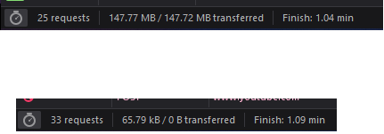
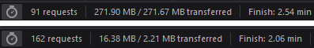

Всем привет, где-то с середины сентября юзаю конфиг " -9 --dns-addr pi-hole -e1 -q --fake-gen 29 --fake-from-hex числа " ютуб работает, но почему-то при просмотре англоязычных каналов (количество просмотров неважно) даже в 720p идут прогрузки каждый 10 секунд, но когда я открываю что-то русскоязычное то оно работает без подгрузок с 1080p и x2 скоростью.
Как я понял русскоязычное он прогружает из близкого ко мне GGC, а вот с остальным контентом уже проблемы. Есть советы как пофиксить? До середины сентября, когда перешел на fake-gen, все работало идеально
Подобрать при помощи этого скрипта стратегию под вашего провайдера, которая как можно больше серверов ютуба обходит. Если в списке нет того сервера, с которого у вас не грузятся видео, докинуть его в список для тестирования.
Большое спасибо за ссылку (и большое спасибо @Ori)
Запустил проверку дефолтного гугл+ют чеклиста, пока что затестил пару стратегий с 23 и 25 из 31 успешными проходами, но… англоязычные видео все еще работают с подгрузками по 10 секунд  зато русскоязычные грузит в 4к и х2 скоростью лол
зато русскоязычные грузит в 4к и х2 скоростью лол
Каким образом собрать список серверов которые нужны мне? Inspect → network и оттуда брать все домены: бла-бла.googlevideo.com/videoplayback до expire ?
Inspect → network и оттуда брать все домены
Да, оттуда выковыривать те домены, с которыми имеются проблемы. А ещё также смотреть, если там не таймаут, а ошибка 403 - то это уже другая проблема, не связанная с GoodbyeDPI, их можно отдельно блокнуть через hosts или правило блокировщика рекламы.
Хм забавно, при конфиге с “25 из 31” половина видео вообще перестали открываться, а другие работают на пределе моего тарифа

А exe до последней версии пробовали обновить и юзать фейк-с-сни?
Ехе последней версии.
фейк-с-сни
Это имеется ввиду только --frag-by-sni?
Если и sni и fake-hex вместе то у меня это всего лишь “13 из 31”
-9 -e2 -q --frag-by-sni без фейк хекса показывает “25 из 31” но результат такой-же хех
Верхнее это если загружать что-то из трендов
Нижнее если включать что-то из моего

p.s. я понимаю что мне нужно подбирать сервера вручную, последний тест был ради интереса
Нет. Он имел в виду --fake-with-sni, который функционально заменяет --fake-from-hex. Для его функционирования нужен тестовый билд гудбая.
Из этой темы. Шапку рекомендую изучить обстоятельно и с пристрастием
Не знаю, это сайт умер или я что-то наделал с конфигом, не мог зайти сюда 4 часа лол
За ссылку спасибо, сделал все по инструкции ииии… по сути вернулся в изначальное состояние 
Браузер рапортует что все ок, но бесящие подгрузки все равно остались
Взял десяток рандомных серверов googlevideo которые у меня не грузились, прогнал их гудчекером, заюзал десяток из самых успешных стратегий но это просто ломало все сайты (про QUIC не забыл)
В общем, жесть какая-то у меня с иностранными серверами googlevideo
Буду дальше перебирать рандомные комбинации 
upd: вижу что проблемы с сайтом и ютубом сейчас у всех
Как альтернативный вариант можно попробовать:
включить расширение Browsec VPN, при включенном впн в умных настройках добавить исключение для googlevideo.com, чтобы все домены ютуба, кроме самого видео, шло через впн. Возможно, в таком случае гугл отправит вас на какие-то другие ggc, более быстрые. Если повезет)